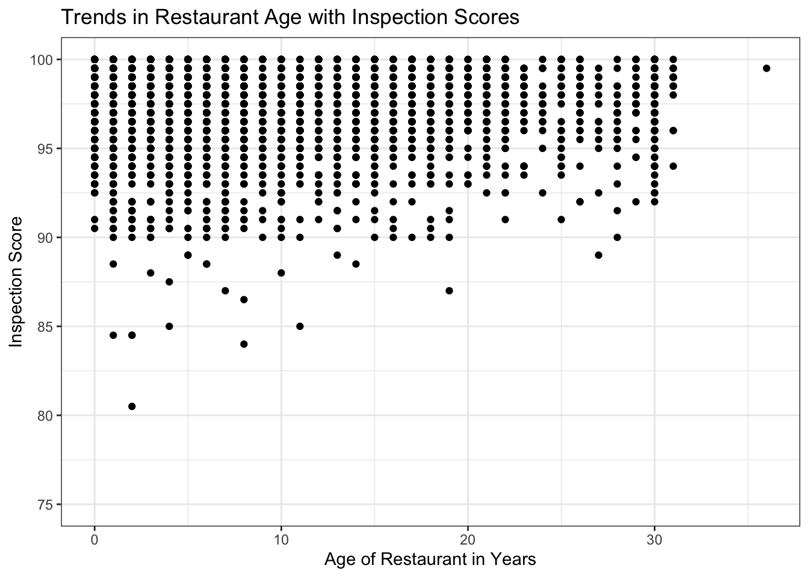
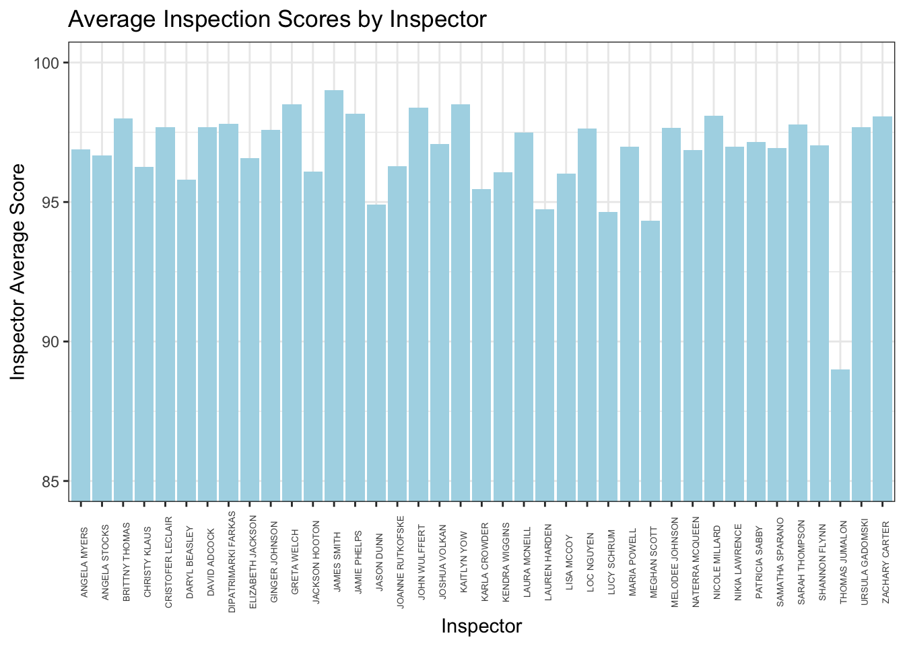
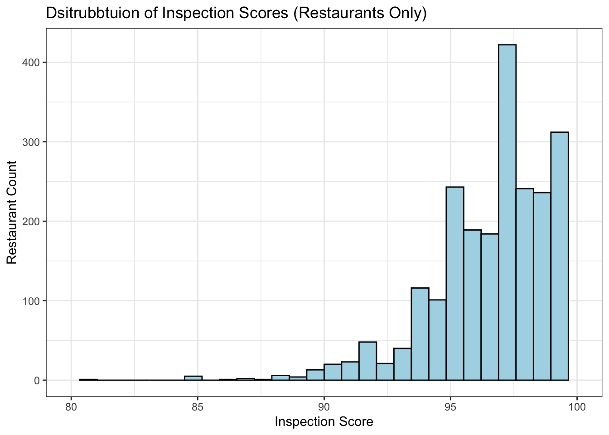
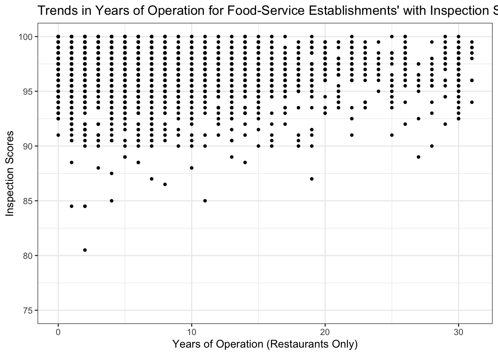

── Attaching core tidyverse packages ──────────────────────── tidyverse 2.0.0 ──
✔ dplyr 1.1.3 ✔ readr 2.1.4
✔ forcats 1.0.0 ✔ stringr 1.5.0
✔ lubridate 1.9.2 ✔ tibble 3.2.1
✔ purrr 1.0.2 ✔ tidyr 1.3.0
── Conflicts ────────────────────────────────────────── tidyverse_conflicts() ──
✖ dplyr::filter() masks stats::filter()
✖ dplyr::lag() masks stats::lag()
ℹ Use the conflicted package (<http://conflicted.r-lib.org/>) to force all conflicts to become errors
Inspecting the Dataset
head(inspec)
OBJECTID HSISID SCORE DATE_
1 25137654 4092021735 97.0 2017-10-22T04:00:00Z
2 25115128 4092013943 96.0 2019-02-27T05:00:00Z
3 25123164 4092021636 98.5 2019-03-04T05:00:00Z
4 25128895 4092021737 90.5 2019-03-23T04:00:00Z
5 25124786 4092021680 97.5 2019-04-24T04:00:00Z
6 25108274 4092013061 98.0 2019-05-14T04:00:00Z
DESCRIPTION
1 <NA>
2 *Notice* Effective January 1, 2019, the NC Food Code 3-501.16 (A)(2)(b)(ii) NOW requires equipment to be upgraded or replaced to maintain food at a temperature of 41 degrees F or less. If you have any questions/concerns, please feel free to call 919-868-6416 or email meghan.scott@wakegov.com\n\nNOTE: Facility has 3 dial-top thermometers that are calibrated accurately. Recommend obtaining a digital thermometer for faster temperature assessment of foods delivered for lunches.
3 *NOTICE* AS OF JANUARY 1, 2019, THE NC FOOD CODE 3-501.16 (A)(2)(b)(ii) NOW REQUIRES EQUIPMENT TO BE UPGRADED OR REPLACED TO MAINTAIN FOOD AT A TEMPERATURE OF 41 DEGREES F OR LESS.
4 Opening check list is needed so that management is aware of deficiencies (such as No paper towels). Food temperature recorded upon delivery is needed.
5 *NOTICE* AS OF JANUARY 1, 2019, THE NC FOOD CODE 3-501.16 (A)(2)(b)(ii) NOW REQUIRES EQUIPMENT TO BE UPGRADED OR REPLACED TO MAINTAIN FOOD AT A TEMPERATURE OF 41 DEGREES F OR LESS.\n*Inspector Info: Patricia Sabby/Patricia.Sabby@wakegov.com/919-796-8053*
6 *NOTICE* AS OF JANUARY 1, 2019, THE NC FOOD CODE 3-501.16 (A)(2)(b)(ii) NOW REQUIRES EQUIPMENT TO BE UPGRADED OR REPLACED TO MAINTAIN FOOD AT A TEMPERATURE OF 41 DEGREES F OR LESS.
TYPE INSPECTOR PERMITID
1 Inspection Karla Crowder 13405
2 Inspection Meghan Scott 13939
3 Inspection Kaitlyn Yow 20554
4 Inspection Angela Myers 15506
5 Inspection Patricia Sabby 14839
6 Inspection Maria Powell 8851
NAME RESTAURANTOPENDATE CITY
1 THE CENTERLINE CAFE 2013/02/01 05:00:00+00 CARY
2 St. Raphael Hall Foodservice 2003/12/01 05:00:00+00 RALEIGH
3 KNIGHTDALE HIGH SCHOOL BASEBALL CONCESSIONS 2010/12/08 05:00:00+00 KNIGHTDALE
4 CORNER KICK CAFE 2013/02/20 05:00:00+00 CARY
5 WOLF VILLAGE C-STORE 2011/08/12 04:00:00+00 RALEIGH
6 PNC 318 1999/10/29 04:00:00+00 RALEIGH
FACILITYTYPE
1 Food Stand
2 Restaurant
3 Food Stand
4 Food Stand
5 Food Stand
6 Restaurant
Question 1 —
To perform a visualization of the distribution of the inspection scores, I created a histogram.
The following code uses ggplot() function to create histogram, with data name inspec, and the x-axis as the scoring column “SCORE.” Following contains the title for the histogram and for the x and y axis. As for theme/style changes, I used a simpler theme to eliminate grey background, and have a cleaner appearance. Additionally, I made the bins blue, with a black outline to make each bin clearer to detect. I added a range for the x-axis in order to get a closer look at the inspection scores, as they tended to range between 80-100.
ggplot(inspec, aes(x= SCORE))+geom_histogram(fill ="light blue", colour="black")+labs(title ="Distrubution of Inspection Scores", x ="Inspection Scores", y ="Count")+theme_bw()+xlim(80,100)
`stat_bin()` using `bins = 30`. Pick better value with `binwidth`.
Warning: Removed 1 row containing non-finite outside the scale range
(`stat_bin()`).
Warning: Removed 2 rows containing missing values or values outside the scale range
(`geom_bar()`).
To answer the second question, I first began to adjust the date in the column “RESTAURANTOPENDATE” in order to make it easier to work the date. I used a new function that I learned from an external source called as.POSIXct() to adjust the format that was in this data set that contained a time.
I used a similar approach to format the “DATE_” column. I used the gsub() function to remove the Z in order to use the same as.POSIXct() function to format the dates similar to one another.
restaurant_inspec <- inspecrestaurant_inspec$RESTAURANTOPENDATE <-as.POSIXct(restaurant_inspec$RESTAURANTOPENDATE, format ="%Y/%m/%d %H:%M:%S", tz="UTC")restaurant_inspec$DATE_ <-gsub("Z", "", restaurant_inspec$DATE_)restaurant_inspec$DATE_ <-as.POSIXct(restaurant_inspec$DATE_, format ="%Y-%m-%dT%H:%M:%S", tz="UTC")
Following, I created a copy of the data set, but with the name “restaurant_inspec_year” to diffrentiate this one from the original data set, as this one contains a new column that contains just the year of the open date of the restaurant, and of the inspection date, in order to subtract one from the other to strip the “age” of the restaurant. This can be seen in the two middle codes. The last chunk of code is taking the formatted dates and subtracting them from one another, and removing any NA values.
Visualizing any trends of restaurant scores to “age” of restaurants;
For this portion of the question, I used a scatter plot to visualize any trends. To do this, i used the geom_point() and added appropriate labels to the graph. In addition, there was a single outlier that remained as a score of 0, and therefore I used the ylim() function to zoom into the graph which contained the most of the data points. There appears to be a slight trend when comparing the age of restaurant to their inspection scores. There is a small visible increase in average of scores among the older restaurants.
ggplot(restaurant_inspec_year, aes(x = restaurant_years, y= SCORE)) +geom_point()+labs(title ="Trends in Restaurant Age with Inspection Scores", x="Age of Restaurant in Years", y="Inspection Score")+theme_bw()+ylim(75,100)
Warning: Removed 1 row containing missing values or values outside the scale range
(`geom_point()`).

I want to note that in order to perform the scatter plot I needed to remove any “NA” values contained in the DATE_ and RESTAURANTOPENDATE. There were a total of 296 values that contained “NA” in the RESTAURANTOPENDATE column, and were therefore removed when plotting.
sum(is.na(restaurant_inspec$DATE_))
[1] 0
sum(is.na(restaurant_inspec$RESTAURANTOPENDATE))
[1] 296
Question 3 —
To begin answering this question I made sure to clean up the values for city names, making sure they remained consistent in spelling and letter case.
Now that I have cleaned up the names of the city, I will calculate the average inspection scores by cities.
I created a table to show the cities in one column, and their averaging inspection scores. I named the object city_avg_score_table, and used the group_by() function to group by cities. Then I used the summarize() function to direct R to produce the averages of the scores using mean.
Based off the table, there seems to be varying scores among the different cities. Although there are differences among scores, the variation is not super big.
Visualizing using a bar graph.
I made a bar graph, using the geom_col() within a ggplot() function to capture the variation in inspection scores within each inspector. I noticed that the scores ranged from about 80-100, therefore I used ylim() to show the y-axis as a range from 85-100 to better showcase the variation in scores. Additionally, I added appropriate titles to the graph, x and y axis. I tilted the angle of the names of inspectors so that they were not bunched up together, and made the text size smaller.
ggplot(inspector_scoring, aes(x= INSPECTOR, y= avg_score))+geom_col(fill="light blue")+theme_bw()+coord_cartesian(ylim=c(85,100))+labs(title ="Average Inspection Scores by Inspector", x ="Inspector", y="Inspector Average Score")+theme(axis.text.x =element_text(angle=90, size=5))

Question 5 —
To find the sample size for each city, I created an object “city_sample” and used the group_by function to group by CITY to find sample sizes among each city. Then I used the summarize function to make a table containing the sample sizes by using n().
Based off the table, it is clear that the sample sizes vary a lot with one another. Some sample sizes are as small as 1, while others have over 1000 samples. This is important to consider when calculating averages within the cities as sample sizes are not equal.
To answer this question, I begin with creating a table of the average scores for each facility type. I used the group_by function to group by FACILITYTYPE, then proceeded with summarize() to extract the averages, labeling the column as “avg_score.”
To visualize the table, I generated a bar graph using geom_col(), and used facility type on the x axis, and the average scores for the y axis. I labeled the graph, x and y axis appropriately and added some color and theme styles. The average scores remained high, so therefore I used coord_cartesian() to set my y-axis range from 90-100 to better visualize the differences in averages. Based off the graph, facility type restaurants are not the highest rated scores, in fact they score lower on average compared to other facility types.
I used ggplot() to make a histogram for the distribution of inspection scores among restaurants. I set the range of the x-axis using xlim() to 80-100 to get a better visual of the distribution, as all the scores ranged higher. Additionally, I added appropriate titles to the graph, x and y axis, and added coloring and theme styles.
`stat_bin()` using `bins = 30`. Pick better value with `binwidth`.
Warning: Removed 1 row containing non-finite outside the scale range
(`stat_bin()`).
Warning: Removed 2 rows containing missing values or values outside the scale range
(`geom_bar()`).

Part 2 — Older vs Newer Restaurant Inspection Scores.
I created an object “only_restaurant_years” to store a version of the inspection data set that contained the years of the restaurant to filter it so that it only shows years for restaurant facilities.
Then I made a scatter plot using geom_point() in a ggplot function. I used ylim() to set a range of 75-100, given that the data remained in a higher range and would make it easier to observe any trends.
only_restaurant_years <- restaurant_inspec_year %>%filter(FACILITYTYPE =="Restaurant")ggplot(only_restaurant_years, aes(x= restaurant_years, y = SCORE))+geom_point(size =1)+theme_bw()+coord_cartesian(ylim=c(75,100))+labs(title ="Trends in Years of Operation for Food-Service Establishments' with Inspection Scores", x="Years of Operation (Restaurants Only)", y="Inspection Scores")

Part 3 — Inspection Scores by City
Based off the table of the average inspection scores by city for restaurants only, there still appears to be a variation among inspection scores among different cities.
Part 4 — Inspection Score Variation Among Inspectors (Restaurants Only)
I created an object containing the average inspection scores among inspectors for restaurants only using my “only_restaurant” data set, to use the group_by() function to summarize the score averages.
Inspection scores still seem to vary among inspectors even when just looking at restaurant facilities only.
Based off the table, it appears sample sizes still vary widely when just looking at restaurant facility types. This can explain why variation exists in average inspection scores among cities.
I used two external sources that assisted me with specific functions that I felt was needed to achieve my end goal. My first source, Rdocumentation, I learned about a new function, and applied it to format my dates as needed. The function is called as.POSIXct(), which is a date-time conversion function, and I was able to use it to help me clean up the format of the date column in my data set. I was able to learn about the different functions that are applied to different formattings with dates, and the differences in the arguments. The second source I used, ggplot2, helped me to learn about a new function that corresponds to a similar function we have learned about in class, ylim(). The function I learned about is coord_cartesian(). As I was creating bar graphs, and wanted to use ylim() to set a range in my y-axis, I continued to receive an error. I learned about this function, which is needed in certain circumstances, which was the case when I was creating visualizations. I incorporated coord_cartesian() with ylim() in order to achieve my result, and was able to successfully incorporate it into my ggplot graph. In addition to the first source I used, Rdocumentation, I also learned about another new function, n(), which provides a sample size in a data set. I figured there was an easier way to count the number of samples in a given data set, and so I was able to learn about n(). This is a function I feel will be very useful in the future, and will continue to be a tool that I will utilize if needed again. Through completing this assignment, I was able to learn about external sources that serve as guides to learning and utilizing functions in RStudio. These sources were very helpful to assisting me with portions of my code, and taught me new functions that I felt were useful tools!